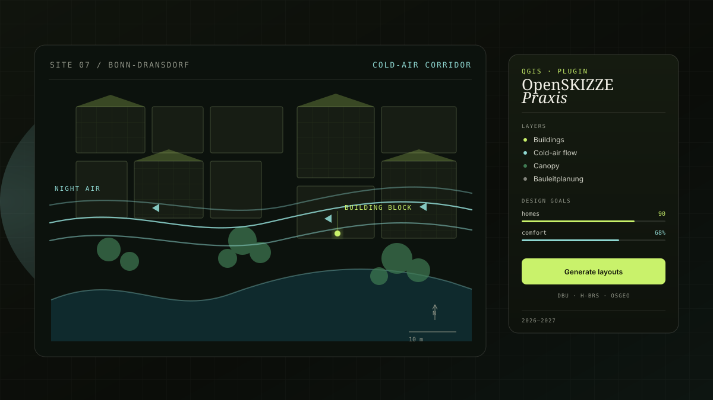

New case study
OpenSKIZZE-Praxis
A 2026–2027 DBU-funded follow-up to OpenSKIZZE that operationalizes the AI assistant within formal municipal Bauleitplanung and land-use planning.

Climate-resilience building blocks for municipal planning
OpenSKIZZE-Praxis is a 2026–2027 DBU-funded project (18 months) that operationalizes the OpenSKIZZE AI assistant within formal municipal Bauleitplanung and land-use planning. It is led by the Project Leader (PI) at H-BRS (TREE) in Sankt Augustin.
The project develops a standardized climate-resilience building block — an adapted OpenSKIZZE tool plus action guides and text modules — piloted and validated with the City of Bonn, and published as open-source modules for established GIS (GRASS GIS, QGIS) in cooperation with the Open Source Geospatial Foundation (OSGeo).
The result will be a working QGIS plugin.
Partners
- OSGeo — Open Source Geospatial Foundation
- City of Bonn — pilot and validation partner